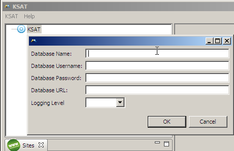

Java runtime (I recommend Java 6 since Java 5 is
end-of-life'd)
A MySQL 5.n database (see the MySQL downloads page for the installers for your platform).
Craig Buckler published a very nice
How-to about installing MySQL.
KSAT should not use the root account - a separate user account should be setup:
CREATE DATABASE db; CREATE USER user IDENTIFIED BY PASSWORD 'password'; GRANT ALL ON db.* TO 'user'@'localhost'; GRANT ALL ON db.* TO 'user'@'%'; -- # support remote logins
workin' on em!
ISCL - http://www.opensource.org/licenses/isc-license.txt
Mike Norman (mwnorman@gmail.com)
Mike Norman (mwnorman@gmail.com)
You can download this project in either
zip or
tar formats.
A windows launcher is available:
ksat.zip
You can also clone the project with Git by running:
$ git clone git://github.com/mwnorman/KSAT